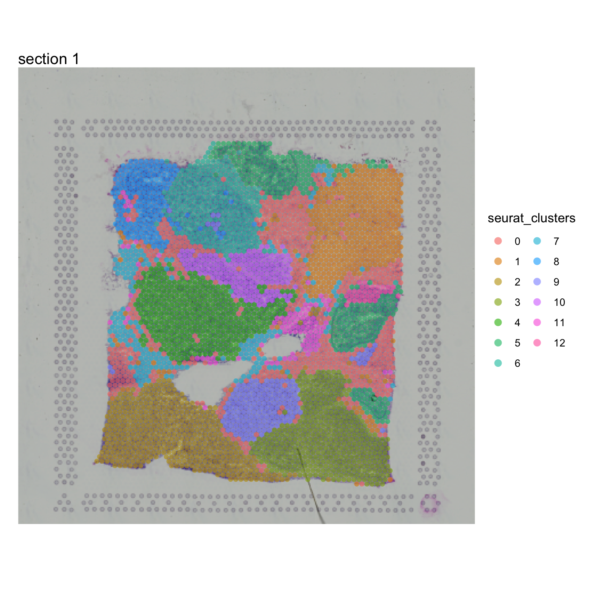
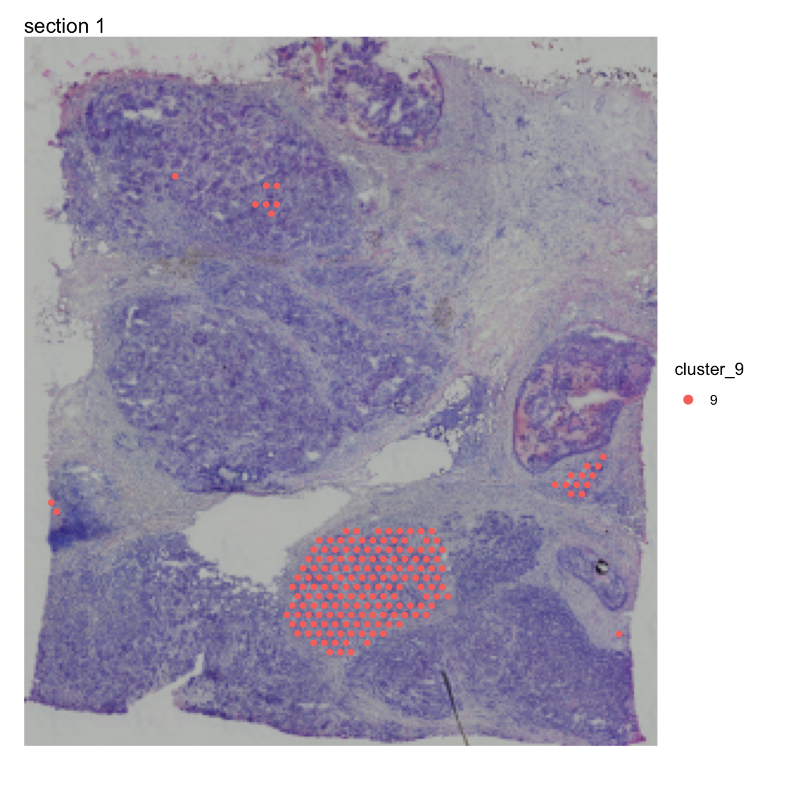
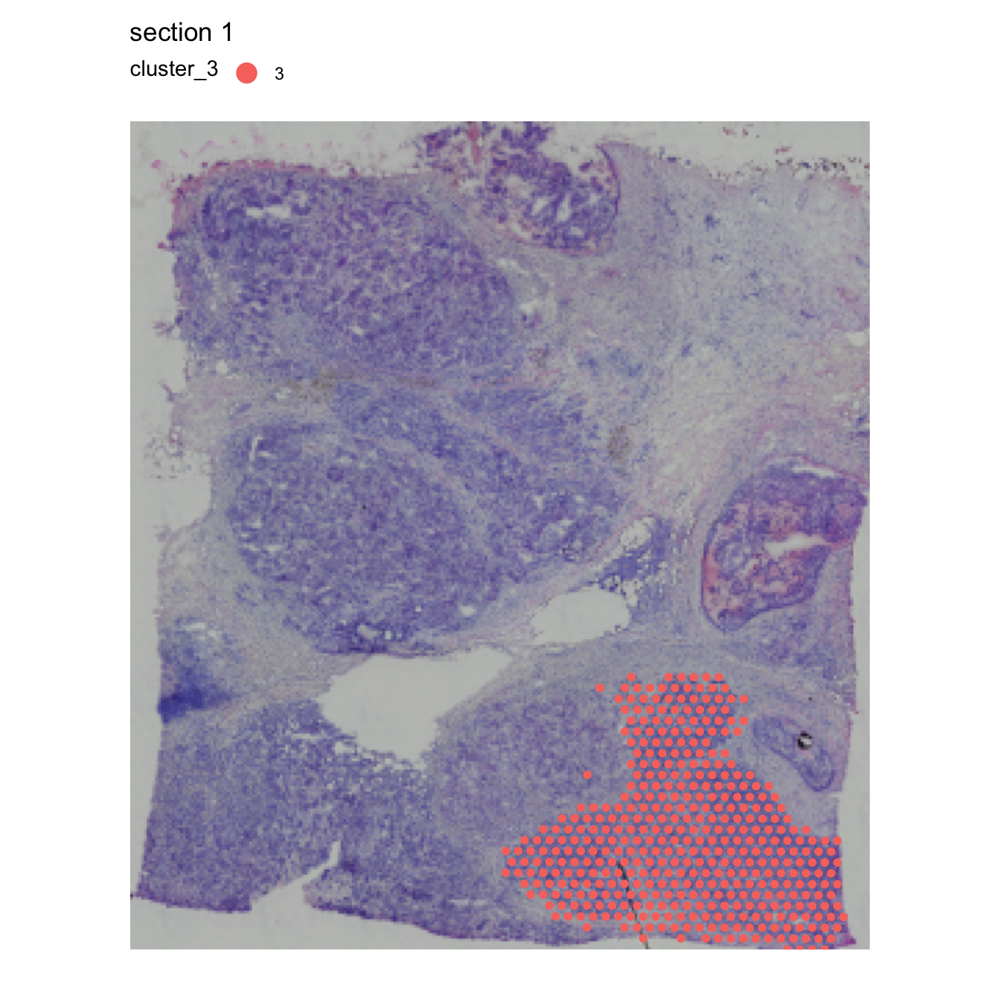
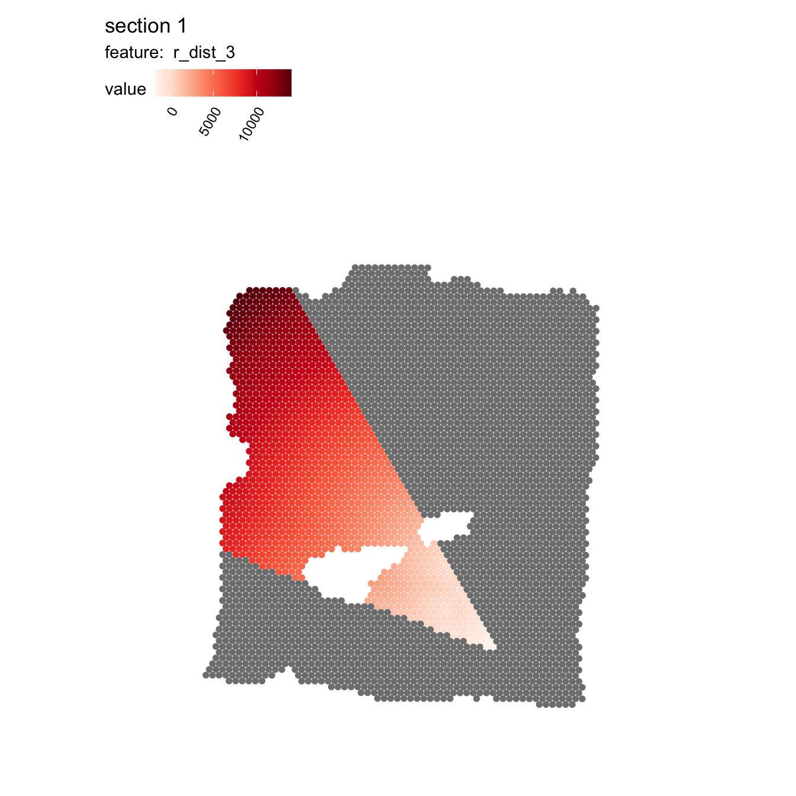
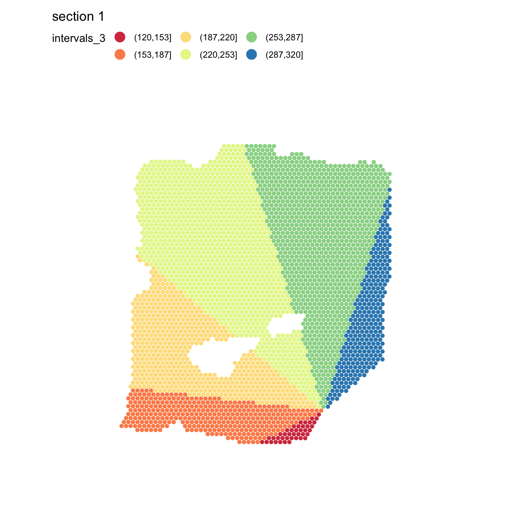
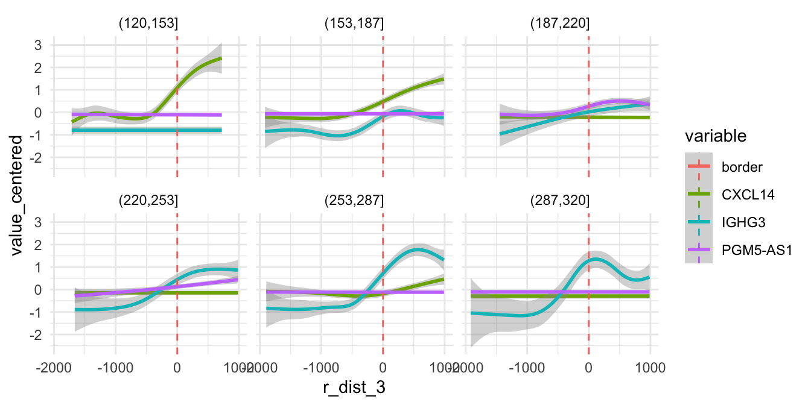

library(semla)
library(tibble)
library(ggplot2)
library(patchwork)
library(scico)
library(tidyr)
library(dplyr)Radial distances
In this notebook, we’ll have a look at so called ‘spatial methods’ provided in semla. ‘spatial methods’ refers to analysis methods which somehow incorporate the position of spots in their calculations.
Load data
First we need to download some 10x Visium data. Here we’ll use a breast cancer dataset provided by 10x:
# Create an empty folder in current directory
dir.create(paste0("./bc_visium"))
download.file(url = "https://cf.10xgenomics.com/samples/spatial-exp/1.0.0/V1_Breast_Cancer_Block_A_Section_1/V1_Breast_Cancer_Block_A_Section_1_filtered_feature_bc_matrix.h5", destfile = "./bc_visium/filtered_feature_bc_matrix.h5")
download.file(url = "https://cf.10xgenomics.com/samples/spatial-exp/1.0.0/V1_Breast_Cancer_Block_A_Section_1/V1_Breast_Cancer_Block_A_Section_1_spatial.tar.gz", destfile = "./bc_visium/spatial.tar.gz")
untar(tarfile = "./bc_visium/spatial.tar.gz",
exdir = "./bc_visium/")
file.remove("./bc_visium/spatial.tar.gz")samples <- "bc_visium/filtered_feature_bc_matrix.h5"
imgs <- "bc_visium/spatial/tissue_hires_image.png"
spotfiles <- "bc_visium/spatial/tissue_positions_list.csv"
json <- "bc_visium/spatial/scalefactors_json.json"
# Create a tibble/data.frame with file paths
infoTable <- tibble(samples, imgs, spotfiles, json)
# Create Seurat object
se <- ReadVisiumData(infoTable = infoTable)Data
Next, we’ll use Seurat to run a simple data processing/analysis workflow:
normalize data
scale data
find variable features
run dimensionality reduction by PCA
Create SNN graph
Cluster data
se <- se |>
NormalizeData() |>
ScaleData() |>
FindVariableFeatures() |>
RunPCA() |>
FindNeighbors(reduction = "pca", dims = 1:30) |>
FindClusters()Modularity Optimizer version 1.3.0 by Ludo Waltman and Nees Jan van Eck
Number of nodes: 3813
Number of edges: 141050
Running Louvain algorithm...
Maximum modularity in 10 random starts: 0.8713
Number of communities: 13
Elapsed time: 0 secondsNow that we have identified clusters in our data based on the spot expression profiles, we can plot these clusters spatially with MapLabels.
se <- LoadImages(se)── Loading H&E images ──ℹ Loading image from /Users/ludviglarsson/10x_data/BC_block_S1/spatial/tissue_hires_image.pngℹ Scaled image from 2000x2000 to 400x400 pixelsℹ Saving loaded H&E images as 'rasters' in Seurat objectMapLabels(se, column_name = "seurat_clusters",
image_use = "raw", pt_alpha = 0.6, pt_size = 2) +
plot_layout(guides = "collect") &
theme(legend.position = "right") &
guides(fill = guide_legend(override.aes = list(size = 3), ncol = 2))
For the purpose of this analysis, we just need to define a region of interest in our tissue sections. We could just as well use the tissue morphology as a basis to define this region. From the plot above, we can see that some clusters are confined to distinct regions, for example cluster 9:
se$cluster_9 <- ifelse(se$seurat_clusters %in% "9", "9", NA)
MapLabels(se, column_name = "cluster_9", override_plot_dims = TRUE,
image_use = "raw", drop_na = TRUE, pt_size = 2) +
plot_layout(guides = "collect") &
theme(legend.position = "right") &
guides(fill = guide_legend(override.aes = list(size = 3), ncol = 2))
Disconnect regions
Cluster 9 is concentrated to a region rich with cancer cells but there are also a few spots in other parts of the tissue. At this point we might only be interested in one of these regions in which case we can split cluster_9 into spatially disconnected compartments. For this purpose, we can use DisconnectRegions:
se <- DisconnectRegions(se, column_name = "seurat_clusters", select_groups = "9")ℹ Extracting disconnected components for group '9'ℹ Detecting disconnected regions for 178 spotsLoading required namespace: tidygraphℹ Found 5 disconnected graph(s) in dataℹ Sorting disconnected regions by decreasing sizeℹ Found 2 singletons in data→ These will be labeled as 'singletons'MapLabels(se, column_name = "9_split", override_plot_dims = TRUE,
image_use = "raw", drop_na = TRUE, pt_size = 2) +
plot_layout(guides = "collect") &
theme(legend.position = "right") &
guides(fill = guide_legend(override.aes = list(size = 3), ncol = 2))
Each spatially disconnected region in cluster 9 now has its own label, order from largest to smallest. Singletons are spots that are completely isolated from other spots with the same label. One could of course achieve the same result by doing a manual selection of spots, for example using the FeatureViewer function, but DisconnectRegions makes it easier to automate. At this point, it might not be entirely clear why one would need this feature, but hopefully this will make sense when we look at ‘radial distances’ in the next section.
Radial distance
Imagine that we are interested in looking at the expression of certain genes as a function of distance to a region of interest. We can compute distances from a region of interest (ROI) using RadialDistances. Here we’ll use cluster 3 as our ROI for the computation.
se$cluster_3 <- ifelse(se$seurat_clusters %in% "3", "3", NA)
MapLabels(se, column_name = "cluster_3", override_plot_dims = TRUE,
image_use = "raw", drop_na = TRUE, pt_size = 2) +
theme(legend.position = "right") &
guides(fill = guide_legend(override.aes = list(size = 5), ncol = 2))
se <- RadialDistance(se, column_name = "seurat_clusters", select_groups = "3")ℹ Running calculations for sample 1ℹ Calculating radial distances for group '3'ℹ Removing 3 spots with 0 neighbors.ℹ Extracting border spots from a region with 413 spots→ Detected 75 spots on borders→ Detected 413 spots inside borders→ Detected 3400 spots outside borders✔ Returning radial distancesWe can illustrate the results by coloring the spots based on the radial distances from cluster “3”:
MapFeatures(se, features = "r_dist_3", center_zero = TRUE, pt_size = 2,
colors = RColorBrewer::brewer.pal(n = 11, name = "RdBu") |> rev(),
override_plot_dims = TRUE)
The distances are calculated from the border of the ROI, where positive values represent the radial distances out from the ROI and negative values represent the radial distances towards the center of the ROI.
Pixel coordinates
The distances are given as pixels relative to the image pixels coordinates that were loaded when creating the Seurat object. If we know the conversion factor between pixels in our original H&E image and microns, we can easily convert the radial distances to microns. In this example data, the center-to-center spot distance is 273 pixels in the image and we know that the actual center-to-center spot distance is 100 microns.
se$r_dist_3 <- (100/273)*se$r_dist_3Alternatively, you can set convert_to_microns = TRUE to make RadialDistance do the conversion for you. Note that the conversion assumes that you are working with Visium data and that at least some spots are adjacent in the dataset.
se <- RadialDistance(se, column_name = "seurat_clusters",
select_groups = "3", convert_to_microns = TRUE)ℹ Running calculations for sample 1ℹ Calculating radial distances for group '3'ℹ Removing 3 spots with 0 neighbors.ℹ Extracting border spots from a region with 413 spots→ Detected 75 spots on borders→ Detected 413 spots inside borders→ Detected 3400 spots outside borders✔ Returning radial distancesConvert radial distances
The scale of the distances is somewhat inconvenient for our color scale, so we can apply some transformation to make them easier to visualize, for example the square root of the distance:
se$r_dist_3_sqrt <- sign(se$r_dist_3)*sqrt(abs(se$r_dist_3))
MapFeatures(se, features = "r_dist_3_sqrt", center_zero = TRUE, pt_size = 2,
colors = RColorBrewer::brewer.pal(n = 11, name = "RdBu") |> rev(),
override_plot_dims = TRUE)
With these distances, we can now explore the expression of certain genes as a function of distance from our ROI. Here we are only interested in the microenvironment outside of our cluster 3, so we will filter the data to have a maximum radial distance of 1000 microns outside of cluster 3. The red dashed line represents the tumor border.
sel_genes <- c("CRISP3", "IGLC2")
se[[]] |>
bind_cols(FetchData(se, vars = sel_genes)) |>
filter(r_dist_3 < 1e3) |>
pivot_longer(all_of(sel_genes), names_to = "variable", values_to = "value") |>
ggplot(aes(r_dist_3, value, color = variable)) +
geom_smooth(method = "gam", formula = y ~ s(x, bs = "cs")) +
geom_vline(aes(xintercept = 0, color = "border"), linetype = "dashed")
Here we can see that the expression of CRISP3 is high inside cluster “3” and declines rapidly at the border whereas IGLC2 show the opposite trend. We can also visualize these trends spatially:
MapFeatures(SubsetSTData(se, expression = r_dist_3 < 1e3),
features = sel_genes, override_plot_dims = TRUE, scale_alpha = TRUE,
image_use = "raw", pt_size = 2)
So why bother using radial distances? Having access to this information makes it possible to identify genes that change with distance to a ROI. In the example above, we could for example identify genes whose expression decrease or increase with distance from the tumor which gives us a useful tool to characterize the tumor microenvironment.
A perhaps even more useful application is to explore the relative abundance of cell types around or inside the tumor border, which we can do if we compute cell type proportions from our data fist.
Focused search
It is rarely the case that the microenvironment is homogeneous in all directions from the region of interest. In our breast cancer tissue section, we can clearly see that the tissue composition is different depending on which direction you look from our region of interest. RadialDistance therefore provides an option to narrow down the search space to a predefined interval of angles.
The plot below (generated with AnglePlot) should give you an idea about how the angles are calculated for a certain region. The ROI center is defined by taking the median of the x, y coordinates for the spots of the ROI. The angles are defined clockwise where 0° = right, 90° = down, …
AnglePlot(se, column_name = "cluster_3", selected_group = "3", pt_size = 2,
crop_area = c(0.2, 0.3, 1, 1), image_use = "raw", radius = 0.3, drop_na = TRUE)
Disconnected regions
Before you proceed, note that it is important that the ROI is spatially connected. If not, RadialDistance will complain that it finds disconnected components and will abort the function. This is intended to prevent users from defining a center outside of the ROI which would likely happen if multiple ROIs are present. It doesn’t make much sense to compute radial distances from one center when there are multiple centers present. Instead, you can split the disconnected components with DisconnectRegions and focus on one ROI.
Now that we have an idea about how the angles are defined, we can provide an interval of angles to narrow down the search area and calculate radial distances. The color scale in the plot below represents the radial distances from the tumor (cluster 3) center.
se <- RadialDistance(se, column_name = "seurat_clusters", select_groups = "3",
angles = c(200, 240))ℹ Running calculations for sample 1ℹ Calculating radial distances for group '3'ℹ Removing 3 spots with 0 neighbors.ℹ Extracting border spots from a region with 413 spots→ Detected 75 spots on borders→ Detected 413 spots inside borders→ Detected 3400 spots outside borders✔ Returning radial distancesℹ Setting search area between 200 and 240 degrees from region centerMapFeatures(se, features = "r_dist_3", pt_size = 2)
If we want to go for a more exploratory approach, we can split the radial distances into slices by setting angles_nbreaks. In the example below, we narrow the search area to angles between 120-320 degrees and split it into 6 even slices.
se <- RadialDistance(se, column_name = "seurat_clusters", select_groups = "3",
angles = c(120, 320), angles_nbreaks = 6)ℹ Running calculations for sample 1ℹ Calculating radial distances for group '3'ℹ Removing 3 spots with 0 neighbors.ℹ Extracting border spots from a region with 413 spots→ Detected 75 spots on borders→ Detected 413 spots inside borders→ Detected 3400 spots outside borders✔ Returning radial distancesℹ Setting search area between 120 and 320 degrees from region centerℹ Splitting search area into 6 interval(s)MapLabels(se, column_name = "intervals_3", pt_size = 2, drop_na = TRUE,
colors = RColorBrewer::brewer.pal(n = 6, name = "Spectral")) &
guides(fill = guide_legend(override.aes = list(size = 5), ncol = 3))
Inside our Seurat object meta data slot, we now have three new columns: ‘angle_3’, ‘r_dist_3’ and ‘intervals_3’. The ‘intervals_3’ columns tells us what slice each spot belongs to. With this data, we can modify our previous plot and split it by slice. If we look at the same genes as before (CRISP3 and IGLC2), we can see that the trends is quite similar in all 6 directions:
sel_genes <- c("CRISP3", "IGLC2")
se[[]] |>
bind_cols(FetchData(se, vars = sel_genes)) |>
filter(r_dist_3 < 1e3) |>
pivot_longer(all_of(sel_genes), names_to = "variable", values_to = "value") |>
ggplot(aes(r_dist_3, value, color = variable)) +
geom_smooth(method = "gam", formula = y ~ s(x, bs = "cs")) +
geom_vline(aes(xintercept = 0, color = "border"), linetype = "dashed") +
facet_wrap(~ intervals_3, ncol = 3) +
theme_minimal()
However, the trend varies substantially depending on direction for other genes. Below we can see the expression along the radial axis for three genes. Depending on the direction, these genes have very distinct expression profiles.
sel_genes <- c("PGM5-AS1", "CXCL14", "IGHG3")
se[[]] |>
bind_cols(FetchData(se, vars = sel_genes)) |>
filter(r_dist_3 < 1e3) |>
pivot_longer(all_of(sel_genes), names_to = "variable", values_to = "value") |>
group_by(variable) |>
mutate(value_centered = value - mean(value)) |> # Note that the values have been centered
ggplot(aes(r_dist_3, value_centered, color = variable)) +
geom_smooth(method = "gam", formula = y ~ s(x, bs = "cs")) +
geom_vline(aes(xintercept = 0, color = "border"), linetype = "dashed") +
facet_wrap(~ intervals_3, ncol = 3) +
theme_minimal()
If we map the expression of these genes spatially, it is quite clear that these genes are expressed in different niches of the microenvironment. In fact, two of these “niches” are mostly composed of tumor cells.
Hopefully, this demonstration will serve as a motivation to carefully think through how radial distances should be used for specific biological questions. The tools provided in semla are easy to adapt to many different scenarios.
MapFeatures(se, crop_area = c(0.45, 0.6, 0.8, 0.93),
features = sel_genes, scale_alpha = TRUE, ncol = 3,
image_use = "raw", pt_size = 1.5, colors = viridis::viridis(n = 9),
max_cutoff = 0.99) &
theme(legend.position = "right", legend.text = element_text(angle = 0))
Package version
semla: 0.1.0
Session info
sessionInfo()R version 4.2.1 (2022-06-23)
Platform: x86_64-apple-darwin13.4.0 (64-bit)
Running under: macOS Big Sur ... 10.16
Matrix products: default
BLAS/LAPACK: /Users/ludviglarsson/miniconda3/envs/R4.2/lib/libopenblasp-r0.3.21.dylib
locale:
[1] en_US.UTF-8/en_US.UTF-8/en_US.UTF-8/C/en_US.UTF-8/en_US.UTF-8
attached base packages:
[1] stats graphics grDevices utils datasets methods base
other attached packages:
[1] tidyr_1.2.0 scico_1.3.1 patchwork_1.1.2 tibble_3.1.8
[5] semla_0.1.0 ggplot2_3.3.6 dplyr_1.0.9 SeuratObject_4.1.3
[9] Seurat_4.3.0
loaded via a namespace (and not attached):
[1] Rtsne_0.16 colorspace_2.0-3 deldir_1.0-6
[4] ellipsis_0.3.2 ggridges_0.5.3 rstudioapi_0.14
[7] spatstat.data_3.0-0 farver_2.1.1 leiden_0.4.2
[10] listenv_0.8.0 bit64_4.0.5 ggrepel_0.9.1
[13] fansi_1.0.3 codetools_0.2-18 splines_4.2.1
[16] knitr_1.39 zeallot_0.1.0 polyclip_1.10-0
[19] jsonlite_1.8.3 ica_1.0-3 cluster_2.1.4
[22] png_0.1-7 uwot_0.1.14 shiny_1.7.4
[25] sctransform_0.3.5 spatstat.sparse_3.0-0 compiler_4.2.1
[28] httr_1.4.4 assertthat_0.2.1 Matrix_1.5-3
[31] fastmap_1.1.0 lazyeval_0.2.2 cli_3.4.1
[34] later_1.3.0 htmltools_0.5.4 tools_4.2.1
[37] igraph_1.3.4 gtable_0.3.0 glue_1.6.2
[40] RANN_2.6.1 reshape2_1.4.4 Rcpp_1.0.9
[43] scattermore_0.8 vctrs_0.5.1 nlme_3.1-159
[46] spatstat.explore_3.0-5 progressr_0.10.1 lmtest_0.9-40
[49] spatstat.random_3.0-1 xfun_0.32 stringr_1.4.1
[52] globals_0.16.0 mime_0.12 miniUI_0.1.1.1
[55] lifecycle_1.0.3 irlba_2.3.5 goftest_1.2-3
[58] future_1.27.0 MASS_7.3-58.1 zoo_1.8-10
[61] scales_1.2.1 tidygraph_1.2.2 promises_1.2.0.1
[64] spatstat.utils_3.0-1 parallel_4.2.1 RColorBrewer_1.1-3
[67] yaml_2.3.5 reticulate_1.26 pbapply_1.5-0
[70] gridExtra_2.3 stringi_1.7.8 rlang_1.0.6
[73] pkgconfig_2.0.3 matrixStats_0.62.0 evaluate_0.16
[76] lattice_0.20-45 ROCR_1.0-11 purrr_0.3.4
[79] tensor_1.5 labeling_0.4.2 htmlwidgets_1.5.4
[82] bit_4.0.4 cowplot_1.1.1 tidyselect_1.1.2
[85] parallelly_1.32.1 RcppAnnoy_0.0.19 plyr_1.8.7
[88] magrittr_2.0.3 R6_2.5.1 magick_2.7.3
[91] generics_0.1.3 DBI_1.1.3 mgcv_1.8-40
[94] withr_2.5.0 pillar_1.8.1 fitdistrplus_1.1-8
[97] survival_3.4-0 abind_1.4-5 sp_1.5-1
[100] future.apply_1.9.0 crayon_1.5.1 hdf5r_1.3.5
[103] KernSmooth_2.23-20 utf8_1.2.2 spatstat.geom_3.0-3
[106] plotly_4.10.0 rmarkdown_2.15 viridis_0.6.2
[109] grid_4.2.1 data.table_1.14.2 forcats_0.5.2
[112] digest_0.6.29 xtable_1.8-4 dbscan_1.1-10
[115] httpuv_1.6.5 munsell_0.5.0 viridisLite_0.4.1
[118] shinyjs_2.1.0